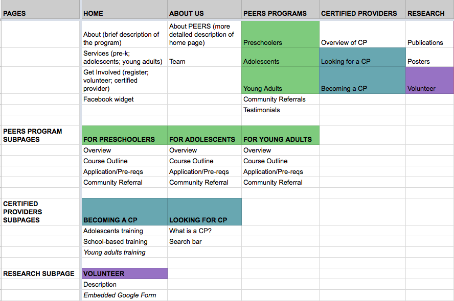
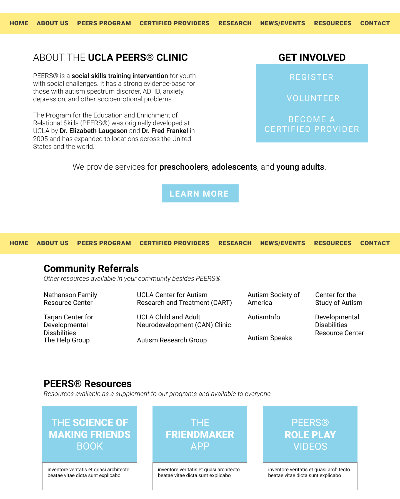

ROLE
Client Partner
UX Researcher
Designer
SKILLS
Research
Wireframing
Visual Design
TOOLS
Figma
Invision
Google Sheets
DELIVERABLES
Wireframes
Recommendations Report
Overview
The UCLA PEERS Clinic is a program that teaches social skills to adolescents and young adults with autistic spectrum disorder. My team of three other students met with the founder of the program and were asked to redesign the PEERS website.
As the client partner, I was responsible for managing communication between the client and my team through email. I also conducted research and designed the high-fidelity wireframes.
This project was a part of a user experience design class in the Information Studies department (INF STD 279) at UCLA. We were given 10 weeks to complete this project.
Problem
Currently, the website is difficult to navigate. The clinic staff members were receiving hundreds of emails and phone calls from potential participants asking about information that should be easily found on the website.
Research
In order to understand the main problem pages on the website, our team held two focus groups: one with staff members and one with program participants/family members. We facilitated discussions around experiences with the website and changes they want to see. Some of the questions we asked include:
- What is the process of signing up a patient for the program? Are there any difficulties? Do people usually have questions when signing up?
- What is one service you wish you knew about the program before signing up?
We were able to narrow down our focus to several pages, including the resources and home pages. By reorganizing these pages, the amount of questions that staff members receive would be reduced, and potential program participants will be able to easily find information on the website.
A couple approaches didn’t work: cognitive walkthrough of the website from a patient's perspective (too cumbersome); Google Analytics (due to the nature of the PEERS website, which is hosted under the larger Semel Institute website, it was difficult to single out the web pages specific to the clinic).
Design
Initially, our team was eager to jump into the visual redesign of the website. We quickly realized that in order to reduce clutter on the website, we needed to reorganize the content and existing pages.
We were able to better visualize the structure of the website after listing out all the existing pages on a whiteboard. We organized our whiteboard session on a Google Spreadsheet.

Taking our new content map, we sketched low-fidelity wireframes of each page and laid out the new organization of the website. To create the high-fidelity wireframes, we each individually redesigned several pages on Figma, an online collaborative tool for designing wireframes.
I was responsible for the navigation bar, Home, Resources, FAQ, and Contact pages.
Deliverables
We presented our client the high-fidelity wireframes and an InVision prototype of our redesign. We also collaborated on a 30-page report with our research-backed recommendations and next steps that they can take. If you would like to see the full document, please contact me here.